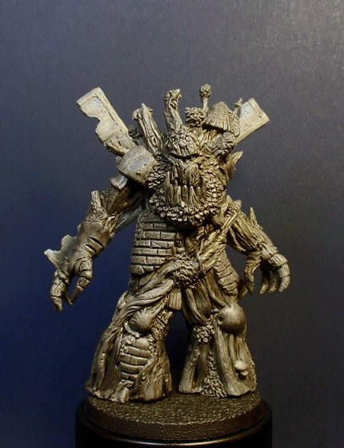
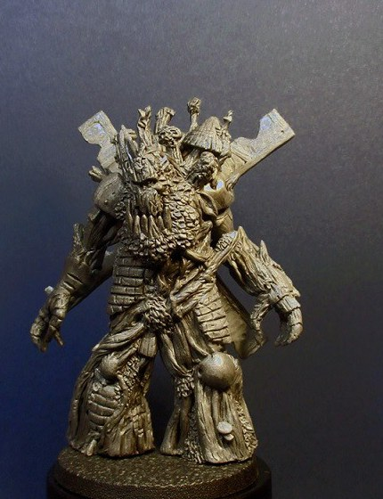
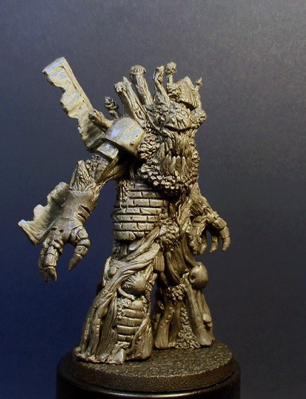
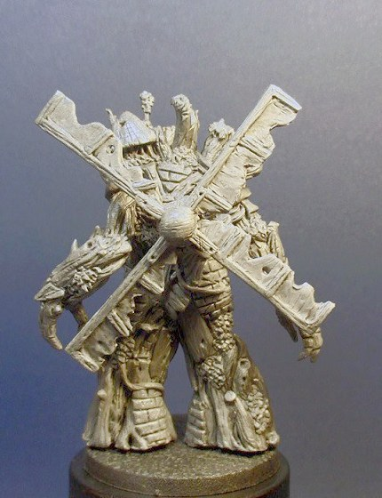
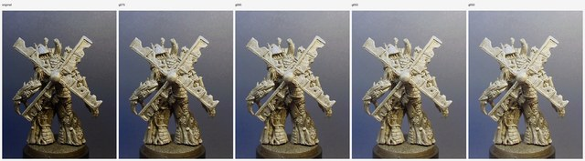

Treeman-windmill — Round 16 runbook
📋 Review panel — at round closeGoal
Fix the one defect Babs flagged in r15: the windmill sails came back bent. The working theory — Babs's own — is that the rear photograph is simply too dark for the reconstruction to read the rotor's geometry cleanly. This round tests exactly that and nothing else: the same Meshy task as r15, with the same three approved view crops, and only the rear view swapped for a brightness-lifted version of the identical rectangle. If the sails come back straight, the cheapest possible fix worked; if they still bend, we know brightness was not the problem and the planned escalation is generating additional rear-angle views instead.
The choices on the table
A single-approach round. Meshy 6, triangle topology, no remeshing — identical settings and inputs to r15 except the one changed panel.
| Choice | What it tests | Input(s) | Rolls |
|---|---|---|---|
| r15 task re-run with the brightened rear view | Whether lifting the rear view's brightness alone is enough for Meshy to reconstruct straight, well-formed sails | treeman-r15-panel-{tl,tr,ml} + treeman-r16-panel-mr as a 4-view Meshy task | 2 |
Two rolls on identical inputs, per the standing two-rolls-per-keeper rule: feature defects are a per-roll lottery, and r15 itself drew one watertight and one non-watertight roll from the same inputs. Total: two Meshy calls, nothing else.
The single-variable discipline is load-bearing. The three unchanged views are the exact bytes Meshy consumed in r15 (verified by hash against the approved r15 crop report), and the new rear panel is pixel-exactly the gamma-0.55 LUT of r15's rear panel — same rectangle, same anchor, no geometry or framing change. Whatever changes in the output is therefore attributable to the tone lift and Meshy's own stochasticity, which two rolls lets us separate.
Inputs — what this round runs on
Everything that goes in, grouped by the choice it belongs to. Click any image to zoom; open a prompt to read the exact text this round spends against. Crop sets show both the cut overview and every exact output crop.
r15 task re-run with the brightened rear view4 images · 1 prompt
The four Meshy views: front tl (0 deg) plus tr (-20), ml (+45) and the brightened mr (180). tl/tr/ml are the r15 panel files byte-for-byte — not re-cut, not re-saved — so 'unchanged' holds by construction. mr is the same 430x560 base-anchored rectangle with a gamma-0.55 monotonic tone lift and nothing else: pixel-exactly the LUT of the approved r15 mr panel.
treeman-r15-panel-tl
treeman-r15-panel-tr
treeman-r15-panel-ml
treeman-r16-panel-mr
Manifest — Meshy task manifest (both rolls, pinned settings) 1 kB
projects/treeman-windmill/notes/r16-meshy-manifest.json
{
"tasks": [
{
"kind": "image",
"ai_model": "meshy-6",
"topology": "triangle",
"remesh": false,
"front": "../generated/treeman-r15-panel-tl.png",
"views": [
"../generated/treeman-r15-panel-tr.png",
"../generated/treeman-r15-panel-ml.png",
"../generated/treeman-r16-panel-mr.png"
],
"out": "../models/round-16/treeman-r16-photo-m1-raw.stl"
},
{
"kind": "image",
"ai_model": "meshy-6",
"topology": "triangle",
"remesh": false,
"front": "../generated/treeman-r15-panel-tl.png",
"views": [
"../generated/treeman-r15-panel-tr.png",
"../generated/treeman-r15-panel-ml.png",
"../generated/treeman-r16-panel-mr.png"
],
"out": "../models/round-16/treeman-r16-photo-m2-raw.stl"
}
]
}
Tone evidence — what the crop gate approves1 image · 2 prompts
The rear window at gamma 1.0 (original, as r15 ran it) beside the 0.75 / 0.65 / 0.55 / 0.50 candidates. Recommendation: gamma 0.55 — subject mean luminance 87 -> 131, 0.0003% of pixels clipped to white — as the closest match to the brightness-lifted reference edit Babs supplied on Discord. The committed crop report records the tone parameters, clipping fractions, and the hash checks tying every panel back to the approved r15 crops.
treeman-r16-crop-evidence-mr
Manifest — Crop manifest (r15 geometry + mr tone) 4 kB
projects/treeman-windmill/runbooks/r16-reference-crops.json
{
"purpose": "photographic-reference",
"source": "../concept-art/round-12/treeman-r12-source-treemolin.jpg",
"threshold": 90,
"background": [
230,
230,
230
],
"_boxes": "Source boxes are cut INSIDE each montage cell, clear of the PR shield at x 536-652, y 606-742. The shield straddles both the row gutter and the vertical seam, so it reaches into all four cells; the mid-row boxes stop at x=528 / start at x=660 and the top-row boxes stop at y=604 to keep it out. Excluding it by BOX rather than by exclude_boxes matters: the shield sits on the left/right edge bands the background ramp is estimated from, so leaving it inside a box poisons the background model for every row it touches \u2014 which is why r14's automatic attempt was rejected here.",
"_base_ellipses": "cx, cy, rx, ry of each display base's TOP surface, in panel pixels. In rectangle mode these are no longer a cut \u2014 nothing is cut \u2014 they are the ANCHOR: the sculpt stands in the middle of its base, so the base's centre and near rim place an identically-sized window the same way in every panel. tl/ml/mr were fitted from the mask's own bottom silhouette; tr was measured by hand off a pixel grid, because its threshold mask leaks into the bright corner.",
"_rectangle": "Approach 1 (Dimitri, 2026-08-02), after the isolating crop was rejected: parts of the sculpt cut out, holes in the hands, backdrop still showing in the gaps, and the base cut shearing the feet. The four photos were shot at ONE camera distance, so identical rectangles preserve the sculpt's true relative scale exactly \u2014 better than normalising a silhouette box, which breathes with the raised arm. Nothing is masked, painted or cut: backdrop and display base stay as photographed, so none of those four defects can occur by construction. The tool still computes a mask, but only to CHECK the subject fits inside the window; if it does not, the run fails.",
"rectangle": {
"size": [
430,
560
],
"foot_pad": 18
},
"_order": "Rotational turntable, unchanged from r14: tr = -20 deg (near-front), tl = 0 (front), ml = +45 (right three-quarter), mr = 180 (back). Dimitri's angle read from the physical sculpt in hand.",
"_slots": "All four panels are the same 430x560 rectangle, so the slot scales them identically and the sculpt's true relative scale survives composition. Sheet heights match r14's references (3584 and ~900), so what changed against r14 is the framing, not the size.",
"panels": [
{
"id": "tr",
"box": [
660,
4,
1164,
604
],
"base_ellipse": [
204,
534,
104,
26
]
},
{
"id": "tl",
"box": [
4,
4,
528,
604
],
"base_ellipse": [
256,
539,
112,
28
]
},
{
"id": "ml",
"box": [
4,
625,
528,
1218
],
"base_ellipse": [
266,
529,
116,
29
]
},
{
"id": "mr",
"box": [
660,
625,
1164,
1218
],
"base_ellipse": [
204,
520,
118,
30
],
"tone": {
"gamma": 0.55
}
}
],
"review_order": [
"tr",
"tl",
"ml",
"mr"
],
"layouts": [],
"_tone": "R16 single-variable change (Dimitri, 2026-08-03): the rear view is the darkest panel and its sails mangled in both r15 rolls; Babs's brightness-lifted edit read much clearer. Only mr gets a tone map \u2014 gamma 0.55 chosen from a 0.75/0.65/0.55/0.50 candidate strip as the closest match to Babs's edit with zero highlight clipping (subject mean luminance 87 -> 131). tr/tl/ml must come out byte-identical to the approved r15 panels; the crop gate verifies that plus the mr tone evidence.",
"_layouts": "Empty by design: r16 feeds Meshy the four individual panels directly (front=tl, views=tr/ml/mr), same as r15; no composed turntable sheet is consumed, so none is produced."
}Manifest — Crop report (tone facts and hashes) 4 kB
projects/treeman-windmill/runbooks/r16-crop-report.json
{
"purpose": "photographic-reference",
"source": "runbooks/../concept-art/round-12/treeman-r12-source-treemolin.jpg",
"source_sha256": "0894a941b30a957f15d8a3b0d976794f9e92e081eb98b8ca9be053a958d8182f",
"replacement_background_rgb": [
230,
230,
230
],
"panels": {
"tr": {
"source_box": [
660,
4,
1164,
604
],
"mode": "rectangle",
"source_rect": [
0,
18,
430,
578
],
"anchor_offset": [
11,
0
],
"subject_bbox": [
31,
125,
343,
572
],
"base_ellipse": [
204,
534,
104,
26
],
"estimated_source_background_rgb": [
55,
59,
73
],
"background_removed": false,
"tone": null,
"warnings": [
"rectangle shifted [11, 0] px to stay inside the source box, so this panel is not exactly base-centred"
],
"sha256": "96e7cb8d8392e2655d5a37535dfd5981014d594f8852790c73b797676e256f5d"
},
"tl": {
"source_box": [
4,
4,
528,
604
],
"mode": "rectangle",
"source_rect": [
41,
25,
471,
585
],
"anchor_offset": [
0,
0
],
"subject_bbox": [
94,
127,
406,
569
],
"base_ellipse": [
256,
539,
112,
28
],
"estimated_source_background_rgb": [
58,
59,
74
],
"background_removed": false,
"tone": null,
"warnings": [],
"sha256": "bed488c972e642da70fb6e3ec71ab72b3792387ba5409f304c50dcd72b0565b7"
},
"ml": {
"source_box": [
4,
625,
528,
1218
],
"mode": "rectangle",
"source_rect": [
51,
16,
481,
576
],
"anchor_offset": [
0,
0
],
"subject_bbox": [
74,
93,
379,
560
],
"base_ellipse": [
266,
529,
116,
29
],
"estimated_source_background_rgb": [
57,
57,
73
],
"background_removed": false,
"tone": null,
"warnings": [],
"sha256": "3647c86f8a3edb9368f2ab57f6c537458799fa877851e1731a5bff83bc28cc9b"
},
"mr": {
"source_box": [
660,
625,
1164,
1218
],
"mode": "rectangle",
"source_rect": [
0,
8,
430,
568
],
"anchor_offset": [
11,
0
],
"subject_bbox": [
36,
100,
380,
550
],
"base_ellipse": [
204,
520,
118,
30
],
"estimated_source_background_rgb": [
60,
59,
74
],
"background_removed": false,
"tone": {
"gamma": 0.55,
"gain": 1.0,
"contrast": 1.0,
"clipped_black_fraction": 0.006697,
"clipped_white_fraction": 3e-06
},
"warnings": [
"rectangle shifted [11, 0] px to stay inside the source box, so this panel is not exactly base-centred"
],
"sha256": "b406500b6cf1c727562208f61c4a5cf3efa50823241690a69d9a80b395e9f986"
}
},
"rectangle": {
"size": [
430,
560
],
"foot_pad": 18
},
"outputs": [],
"preview_sha256": "05233d10536a09e398550e8c2273e8730a5f0a77ac376791464df9e138938ec4",
"draft_review": false,
"human_approval": {
"status": "PENDING",
"instruction": "Use crop-review.png for order/overview, then compare each source box with its full-resolution cleaned panel at 2x around the entire silhouette. Record reviewer/date/verdict in rounds.md before downstream use."
}
}
How the round is judged
Crop gate first (second of two). The r14 post-mortem requires a named human to approve photographic-reference preparation evidence before paid downstream work, for two rounds; r15 was the first, this is the second. The evidence for this round is deliberately small because the change is small: treeman-r16-crop-evidence-mr shows the rear window at gamma 1.0 (original) beside 0.75 / 0.65 / 0.55 / 0.50 candidates. Gamma 0.55 is the recommendation — subject mean luminance rises 87 → 131 with negligible clipping (0.0003% of pixels driven to white) — as the closest match to the reference edit Babs supplied. The mechanical checks behind it: tl/tr/ml are pixel-identical to the approved r15 panels, mr equals the LUT applied to the approved r15 mr exactly, and the tone parameters and clipping fractions are recorded in runbooks/r16-crop-report.json. Approving a different gamma from the strip is a one-line manifest change and a re-run of the deterministic tool.
Each returned raw mesh is pushed to Drive the moment it lands, then validated with trimesh (watertightness, components, bounds) and rendered as a turnaround plus level views of the display-base plane — identical treatment to r15, so the rounds compare like for like. A fresh-context per-feature review walks the complete checklist against the source photographs as gold, with one round-specific focus added at the top: the four sails, judged individually — straight or bent, spar/board construction present or slabbed — explicitly side by side with r15's M1 and M2 renders. The display-base caveat carries over from r15 unchanged: a fused base is expected, judged separately on whether one clean cut plane exists, and no scaling or millimetre thin-part thresholds run on raw returns.
The gate is human: Dimitri rotating the raw STLs, and Babs's read on the sails, against r15's M2 as the standing fallback keeper. Acceptance is concrete: straighter, better-formed sails than both r15 rolls, without regressing the body reconstruction that was already good enough.
What we need from you
- Crop-gate approval (named human): approve the gamma-0.55 rear panel from the evidence strip — or name a different candidate from it.
- Sign-off on this runbook and the ~40-credit cap, recorded as the durable greenlight.
- At close: which roll (if either) beats r15 M2 on the sails; whether a keeper advances to the finishing runbook (debase, 50 mm scale, thin-part probe), and the formal keeper pick that is still open from r15. If the sails still bend, the decision is whether to escalate to generated rear-angle views (held as the next option, not part of this round).
Cost
Two Meshy runs at ~20 credits each → ~40 credits. No image generation, so no Gemini/OpenRouter spend and no blind-detect line. Crop preparation, validation and rendering are local and free.
Technical plan — tone tooling, Meshy inputs, commands (pipeline detail)
What changed going in (spec / prompt / process deltas)
tools/reference_crops.pygains a manifest-declaredtoneadjustment (this runbook's PR): an optional per-panel{"gamma", "gain", "contrast"}spec applied as one monotonic per-channel LUT, with parameters and black/ white clipping fractions echoed in the crop report. Geometry checks run on the original pixels; the LUT can re-map values but never move, tint, or invent geometry. This is the standard mechanism Dimitri asked for so future rounds inherit the capability instead of ingesting ad-hoc edits.runbooks/r16-reference-crops.jsonis the r15 manifest byte-for-byte on geometry (same source, boxes, base ellipses, 430×560 rectangle, foot pad) plus"tone": {"gamma": 0.55}onmronly, and no composed layouts (the round feeds Meshy the four individual panels; no turntable sheet is consumed). Its report is committed asrunbooks/r16-crop-report.json.- Only one new input file exists.
tl/tr/mlare not re-cut or re-saved for r16: the Meshy manifest references the r15 panel files themselves, so "unchanged" is enforced by construction, not by comparison. - Committed Meshy manifest.
notes/r16-meshy-manifest.jsonpins both identical calls:meshy-6, triangle topology,remesh: false, front =tl(0°), views =tr(−20°),ml(+45°),mr(180°, brightened), with distinct-raw.stloutputs undermodels/round-16/. - Raw evaluation stops before finishing, exactly as in r15: no debase, no scaling, no millimetre thin-part thresholds on raw returns. The coverage weakness is also unchanged and worth restating: no true side profile and nothing on the 180°–340° arc, so the reconstruction still invents both sides; the review looks there after the sails.
Experiment matrix
Reference preparation (no credits, gated on the named-human crop approval):
| # | Source (input) | Operation | Out stem (output) |
|---|---|---|---|
| P1 | treeman-r12-source-treemolin | reference_crops.py, rectangle mode + mr tone gamma 0.55 | treeman-r16-panel-mr (only mr is kept; tl/tr/ml verify pixel-identical to r15 and are discarded) |
Meshy (40 credits), two independent rolls on identical inputs:
| # | Front | Other views | Out |
|---|---|---|---|
| M1 | treeman-r15-panel-tl (0°) | tr (−20°), ml (+45°), treeman-r16-panel-mr (180°) | models/round-16/treeman-r16-photo-m1-raw.stl |
| M2 | treeman-r15-panel-tl (0°) | tr (−20°), ml (+45°), treeman-r16-panel-mr (180°) | models/round-16/treeman-r16-photo-m2-raw.stl |
Commands (run after sign-off and durable greenlight verification)
Setup — dependencies and the frozen input binaries (gitignored, on Drive). Do not regenerate the r15 panels; verify all four inputs against their committed reports:
python3 -m pip install -r requirements.txt
tools/drive_sync.sh pull projects/treeman-windmill/generated
python3 - <<'PY'
import hashlib, json
from pathlib import Path
project = Path("projects/treeman-windmill")
r15 = json.loads((project / "runbooks/r15-crop-report.json").read_text())
r16 = json.loads((project / "runbooks/r16-crop-report.json").read_text())
def sha(p): return hashlib.sha256(p.read_bytes()).hexdigest()
for panel in ("tl", "tr", "ml"):
path = project / "generated" / f"treeman-r15-panel-{panel}.png"
if sha(path) != r15["panels"][panel]["sha256"]:
raise SystemExit(f"approved r15 crop hash mismatch for {path}")
mr = project / "generated" / "treeman-r16-panel-mr.png"
if sha(mr) != r16["panels"]["mr"]["sha256"]:
raise SystemExit(f"approved r16 tone-panel hash mismatch for {mr}")
tone = r16["panels"]["mr"]["tone"]
if tone["gamma"] != 0.55 or tone["gain"] != 1.0 or tone["contrast"] != 1.0:
raise SystemExit(f"unexpected tone parameters: {tone}")
print("verified three r15 input hashes and the r16 tone panel")
PY
# The manifest coordinator resolves the Meshy key through tools/_secrets.py,
# fetches the live API-credit balance and atomically requires at least 40
# credits before its first provider POST.Verify the durable greenlight against the republished canonical runbook page:
python3 tools/round_gate.py verify \
--file projects/treeman-windmill/round-gates.jsonl \
--round r16 \
--published-html ../ai-stl-review/reviews/treeman-windmill/treeman/r16-runbook/index.htmlBoth Meshy rolls, as one manifest so task ids are durable and polling is concurrent:
python3 tools/meshy_manifest.py run \
--manifest projects/treeman-windmill/notes/r16-meshy-manifest.jsonRecord the emitted run id. After any interruption use meshy_manifest.py resume --run RUN_ID — never repeat the manifest as a new run. Push each mesh to Drive the moment it lands, before validation:
# Run each time the coordinator prints a `wrote ...-raw.stl` line; do not
# wait for both rolls or for validation.
tools/drive_sync.sh push projects/treeman-windmill/models
# After each immediate Drive push, set ROLL to the roll that just landed and
# collect raw-only evidence (once for m1, once for m2). No scaling, debasing
# or fixed-mm thinness thresholds on raw returns.
P=projects/treeman-windmill
ROLL=m1
STEM="treeman-r16-photo-${ROLL}"
STL="$P/models/round-16/${STEM}-raw.stl"
python3 tools/mesh_validate.py --stl "$STL" --units raw \
--label "$STEM-raw" \
--out "$P/notes/r16-${ROLL}-raw-validation.json"
python3 tools/stl_render.py --stl "$STL" \
--out-dir "$P/generated/renders/round-16" --stem "$STEM-raw" \
--mode turnaround
python3 tools/stl_render.py --stl "$STL" \
--out-dir "$P/generated/renders/round-16" \
--stem "$STEM-base-plane" --mode turnaround --elevation 0Then the fresh-context per-feature review — source photographs as gold, r15 M1/M2 renders alongside for the sail comparison — verdicts to reviews.jsonl, and the r16-panel review page with an interactive raw-mesh viewer per roll (review_page.py --inline, mesh set on every card), labelled as raw, display-base-included returns with the 50 mm post-debase target stated. The durable log is ../rounds.md — that and the r16-panel review, not this runbook, are where the round's outcome and verdicts live. A keeper's debase/scale/thin-probe work opens under its own finishing runbook after this review.